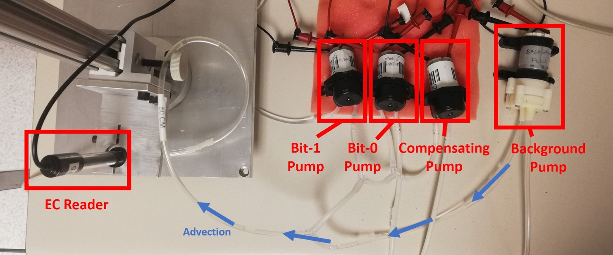

Dongyin HU
dyhu@mail.ustc.edu.cn
huwindy@hotmail.com
University of Science and Technology of China,
B.Eng. from School of Information Science and Technology,
GPA : 3.91/4.30, ranking 2/60 (Dpt.) 11/363 (Sch.) (Tscpt.)
Incoming student of UCSD ECE department.
Welcome to Dongyin Hu's personal website. I earned my B.Eng. degree from University of Science and Technology of China in Jul, 2020 and will continue my education in University of California, San Diego. My research interests lie in networking, mobile and wireless networks, and develop interactive systems using these techniques. I believe research in this field will enable modern electronic devices which are capable to benefit all.
Publications
2020
-
Jiaming Wang, Dongyin Hu, Chirag Shetty, and Haitham Hassanieh. 2020. Understanding and Embracing the Complexities of the Molecular Communication Channel in Liquids. In MobiCom’20.
Research
Milliback : Real-Time Plug-n-Play mm-Level Tracking Using Wireless Backscattering
University of Science and Technology of China, Lab for Intelligent Networking and Knowledge
Engineering
(LINKE)
Published in UbiComp
19 (Not author). From Jan 2018 - Aug 2019.
In Milliback, we devised a real-time accurate tracking system using wireless backscatter signals. This is especially useful for applications such as AI-assisted education, remote healthcare, and handwriting-training for kids. Existing sensing modalities (such as inertial, vision or Wi-Fi) fail to offer the necessary accuracy (mm-level) due to occlusion, error accumulation or deployment cost. Therefore, we focused on low-cost RFID tags, and utilized GHz signals to reach high accuracy for their sensitivity to distance change. However, this posed a new challenge for us: we had to discard current RFID protocol due to frequency mismatch, and thus also discarded much information about the channel state. I proposed and implemented two O(n) tracking algorithms with a little knowledge of channel, and actively assisted in the design of two corresponding systems consisting of multiple receivers and one position-constrained/free transmitter. The system reaches an excellent performance of merely 4.9mm mean error.
Understanding and Embracing the Complexities of the Molecular Communication Channel in Liquids
University of Illinois at Urbana-Champaign, System & Networking Research Group
(SyNRG)
Published in MobiCom'20,
with me as second author. From Jul 2019 - Sep 2019.
 Using molecular communication (MC) to build a network within the human body is promising, yet not well understood. A key challenge lies in the different channel properties of MC and traditional communication methods. Our proposed MC protocol, μ-Link, tackled that challenge with a Viterbi decoder that captures these properties precisely. I improved the performance of the decoder in μ-Link by updating the channel state information, and then modified the design of our novel macro-scale platform to achieve higher stability. Comparing with other works who model MC channels, μ-Link achieves 5x higher throughput and 20x lower bit error rate, exhibiting both high efficiency and reliability. Our work is currently under submission for MobiCom, with me as the second author.
Scholarships and Honors
- Honorary Rank, 2019
- Graduation honor, top 5%.
- TANG Lixin Scholarship, 2019
- 60 out of the whole university, including undergraduate and graduate students.
- National Scholarship, 2019
- 7 out of 363.
- Scholarship of Institute of Microsystem and Information Technology, 2018
- 11 out of 363.
- Outstanding Student Scholarship, USTC, 2017 & 2016